New Zealand ODI Team
2015 & 2019 World Cup finalists with a balanced squad.
About New Zealand ODI Team
Country: New Zealand
Home Ground: Various (e.g., Eden Park, Auckland)
Captain: Kane Williamson
Coach: Gary Stead
New Zealand’s ODI team, the Black Caps, is known for its consistency and team spirit, reaching two World Cup finals.
Newzealand Players
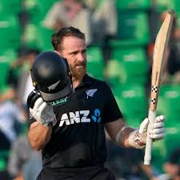
Kane Williamson (C)
Captain, batsman.
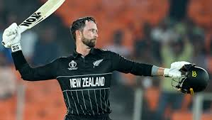
Devon Conway
Batsman, reliable opener.
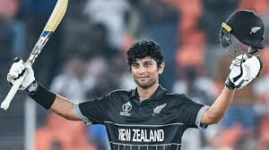
Rachin Ravindra
All-rounder, left-arm spinner.
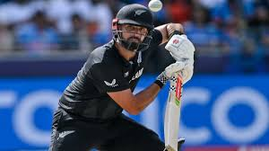
Daryl Mitchell
Batsman, middle-order anchor.
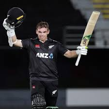
Tom Latham
Wicketkeeper-batsman, reliable.
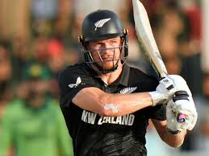
Glenn Phillips
Batsman, power-hitter.
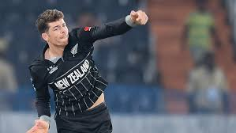
Mitchell Santner
All-rounder, left-arm spinner.
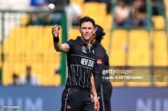
Trent Boult
Bowler, swing specialist.
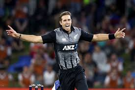
Tim Southee
Bowler, experienced pacer.
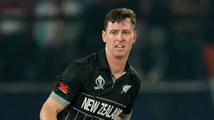
Matt Henry
Bowler, pace bowler.
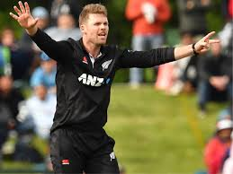
Lockie Ferguson
Bowler, express pace.